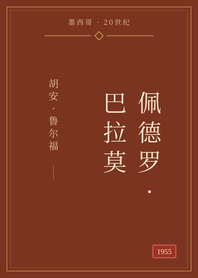
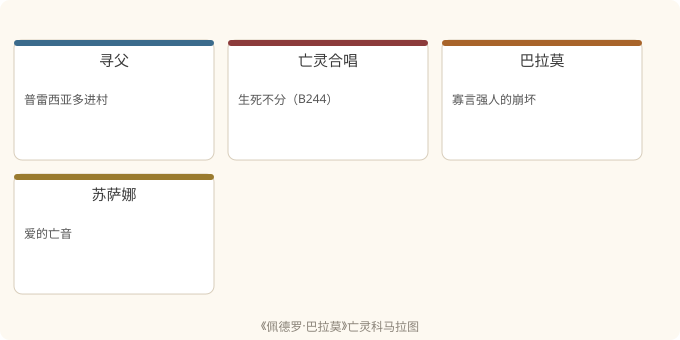

佩德罗·巴拉莫
一、基本信息
| 作者 | 胡安·鲁尔福 |
|---|---|
| 成书/出版 | 1955年出版（Britannica：Pedro Páramo (1955)） Juan Rulfo — Encyclopaedia Britannica（百科全书） |
| 国别/地区 | 墨西哥 |
| 时代 | 现当代 · 20世纪 |
| 体裁 | 中长篇小说 |
| 语言 | 西班牙语 |

《佩德罗·巴拉莫》亡灵科马拉图（主题·结构图）
二、创作背景
Britannica：'examines the physical and moral disintegration of a laconic cacique (boss)'（写一个寡言地方强人的肉体与道德崩坏——B244）；'set in a mythical hell on earth inhabited by the dead, who are haunted by their past transgressions'（鬼魂栖居的人间地狱——B244）。
影响（B244）：'He had an enormous impact on those Latin American authors, including Gabriel García Márquez, who practiced what has come to be known as magic realism'。
三、内容脉络
胡安·普雷西亚多寻父来到科马拉——满村亡灵的对话（通说）。
佩德罗·巴拉莫的记忆碎片与苏萨娜的悲声（通说待核）。
生死界线的消融：小说即亡灵的合唱（通说）。
四、主要人物表
| 人物 | 身份 | 说明 |
|---|---|---|
| 佩德罗·巴拉莫 | 卡西克（强人） | 寡言的地主（B244） |
| 胡安·普雷西亚多 | 寻父者 | 私生子（通说） |
| 苏萨娜·圣胡安 | 爱人 | 亡者之声（通说待核） |
五、主题与艺术特点
- 亡灵的人间地狱（B244）。
- 强人的身体与道德崩坏（B244）。
- 魔幻现实主义的先声（B244：enormous impact）。
六、影响与评论
- Britannica：对包括马尔克斯在内的拉美魔幻现实主义作家影响巨大（B244）。
Juan Rulfo — Encyclopaedia Britannica（百科全书） - 两书立身的传奇：'essentially only two books'（B244）。
Juan Rulfo — Encyclopaedia Britannica（百科全书）
七、阅读建议
难点
- 亡灵叙述——无提示的声部切换。
- 碎片时序。
- 屠孟超译本（译林出版社，通说待核）。
- 西班牙文原版（FCE，通说待核）。
对照《百年孤独》：马尔克斯自称能背诵本书（通说待核）。
八、待核实
- 科马拉村名与普雷西亚多母训核对。
- 屠孟超译本信息核对。
- 马尔克斯'能背《佩德罗·巴拉莫》'轶事出处待核。